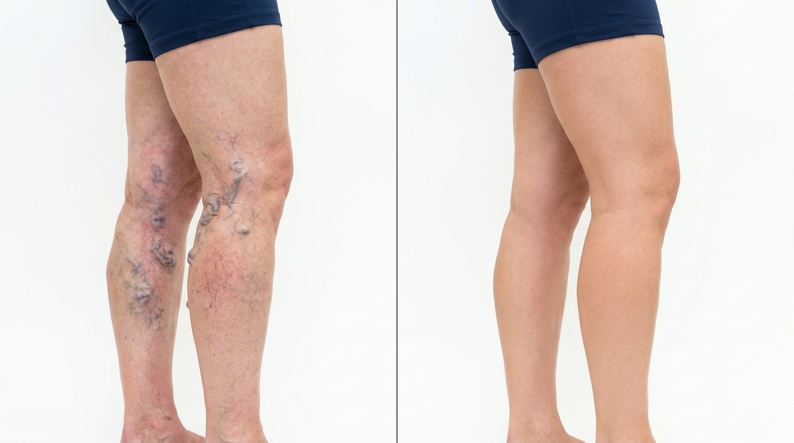
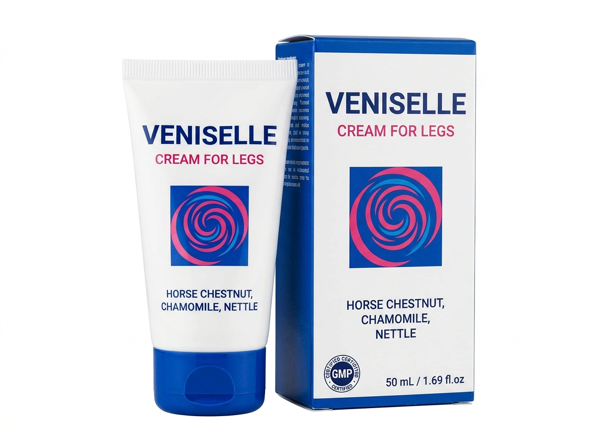

✓ 48.329 personas ya hicieron este test hoy
Responde 5 preguntas y descubre qué tan graves son tus síntomas — y qué puedes hacer hoy mismo para eliminarlos desde casa.

Resultados reales de pacientes con varices tratadas
Determinando el nivel de urgencia de tu caso
La solución
Veniselle es la crema para piernas más recomendada en España para el tratamiento de varices en casa. Actúa desde la primera aplicación, aliviando el dolor y reduciendo las venas visibles en tan solo 2–3 semanas.

Sin tratamiento, las varices provocan insuficiencia venosa crónica, úlceras vasculares y riesgo de trombosis. Cada día que pasa, el daño en tus venas es mayor e irreversible.
PRECIO ESPECIAL — DISPONIBLE MIENTRAS DURE STOCK
✓ Stock limitado. Confirma disponibilidad en tu región.